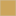
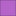
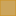

<!doctype html>
<html lang="en">
    <head>
        <meta charset="utf-8">
        <meta http-equiv="X-UA-Compatible" content="IE=edge">
        <meta name="viewport" content="initial-scale=1,user-scalable=no,maximum-scale=1,width=device-width">
        <meta name="mobile-web-app-capable" content="yes">
        <meta name="apple-mobile-web-app-capable" content="yes">
        <link rel="stylesheet" href="css/leaflet.css">
        <link rel="stylesheet" href="css/qgis2web.css"><link rel="stylesheet" href="css/fontawesome-all.min.css">
        <link rel="stylesheet" href="css/leaflet-measure.css">
        <style>
        html, body, #map {
            width: 100%;
            height: 100%;
            padding: 0;
            margin: 0;
        }
        </style>
        <title></title>
    </head>
    <body>
        <div id="map">
        </div>
        <script src="js/qgis2web_expressions.js"></script>
        <script src="js/leaflet.js"></script>
        <script src="js/leaflet.rotatedMarker.js"></script>
        <script src="js/leaflet.pattern.js"></script>
        <script src="js/leaflet-hash.js"></script>
        <script src="js/Autolinker.min.js"></script>
        <script src="js/rbush.min.js"></script>
        <script src="js/labelgun.min.js"></script>
        <script src="js/labels.js"></script>
        <script src="js/leaflet-measure.js"></script>
        <script src="data/Parcelas_1.js"></script>
        <script>
        var highlightLayer;
        function highlightFeature(e) {
            highlightLayer = e.target;

            if (e.target.feature.geometry.type === 'LineString') {
              highlightLayer.setStyle({
                color: '#ffff00',
              });
            } else {
              highlightLayer.setStyle({
                fillColor: '#ffff00',
                fillOpacity: 1
              });
            }
            highlightLayer.openPopup();
        }
        var map = L.map('map', {
            zoomControl:true, maxZoom:28, minZoom:1
        })
        var hash = new L.Hash(map);
        map.attributionControl.setPrefix('<a href="https://github.com/tomchadwin/qgis2web" target="_blank">qgis2web</a> &middot; <a href="https://leafletjs.com" title="A JS library for interactive maps">Leaflet</a> &middot; <a href="https://qgis.org">QGIS</a>');
        var autolinker = new Autolinker({truncate: {length: 30, location: 'smart'}});
        var measureControl = new L.Control.Measure({
            position: 'topleft',
            primaryLengthUnit: 'meters',
            secondaryLengthUnit: 'kilometers',
            primaryAreaUnit: 'sqmeters',
            secondaryAreaUnit: 'hectares'
        });
        measureControl.addTo(map);
        document.getElementsByClassName('leaflet-control-measure-toggle')[0]
        .innerHTML = '';
        document.getElementsByClassName('leaflet-control-measure-toggle')[0]
        .className += ' fas fa-ruler';
        var bounds_group = new L.featureGroup([]);
        function setBounds() {
            if (bounds_group.getLayers().length) {
                map.fitBounds(bounds_group.getBounds());
            }
        }
        map.createPane('pane_CartoPositron_0');
        map.getPane('pane_CartoPositron_0').style.zIndex = 400;
        var layer_CartoPositron_0 = L.tileLayer('https://cartodb-basemaps-a.global.ssl.fastly.net/light_all/{z}/{x}/{y}.png', {
            pane: 'pane_CartoPositron_0',
            opacity: 1.0,
            attribution: '',
            minZoom: 1,
            maxZoom: 28,
            minNativeZoom: 0,
            maxNativeZoom: 18
        });
        layer_CartoPositron_0;
        map.addLayer(layer_CartoPositron_0);
        function pop_Parcelas_1(feature, layer) {
            layer.on({
                mouseout: function(e) {
                    for (i in e.target._eventParents) {
                        e.target._eventParents[i].resetStyle(e.target);
                    }
                    if (typeof layer.closePopup == 'function') {
                        layer.closePopup();
                    } else {
                        layer.eachLayer(function(feature){
                            feature.closePopup()
                        });
                    }
                },
                mouseover: highlightFeature,
            });
            var popupContent = '<table>\
                    <tr>\
                        <td colspan="2">' + (feature.properties['fid'] !== null ? autolinker.link(feature.properties['fid'].toLocaleString()) : '') + '</td>\
                    </tr>\
                    <tr>\
                        <td colspan="2"><strong>Tipo</strong><br />' + (feature.properties['Tipo'] !== null ? autolinker.link(feature.properties['Tipo'].toLocaleString()) : '') + '</td>\
                    </tr>\
                    <tr>\
                        <td colspan="2"><strong>Nombre</strong><br />' + (feature.properties['Nombre'] !== null ? autolinker.link(feature.properties['Nombre'].toLocaleString()) : '') + '</td>\
                    </tr>\
                    <tr>\
                        <td colspan="2">' + (feature.properties['ID'] !== null ? autolinker.link(feature.properties['ID'].toLocaleString()) : '') + '</td>\
                    </tr>\
                    <tr>\
                        <td colspan="2">' + (feature.properties['Num Sitio'] !== null ? autolinker.link(feature.properties['Num Sitio'].toLocaleString()) : '') + '</td>\
                    </tr>\
                    <tr>\
                        <td colspan="2">' + (feature.properties['layer'] !== null ? autolinker.link(feature.properties['layer'].toLocaleString()) : '') + '</td>\
                    </tr>\
                    <tr>\
                        <td colspan="2">' + (feature.properties['path'] !== null ? autolinker.link(feature.properties['path'].toLocaleString()) : '') + '</td>\
                    </tr>\
                </table>';
            layer.bindPopup(popupContent, {maxHeight: 400});
        }
        function style_Parcelas_1_0(feature) {
            var context = {
                feature: feature,
                variables: {}
            };
            // Start of if blocks and style check logic
            if (exp_Parcelas_1rule0_eval_expression(context)) {
                  return {
                pane: 'pane_Parcelas_1',
                opacity: 1,
                color: 'rgba(190,152,200,0.6)',
                dashArray: '10,5',
                lineCap: 'butt',
                lineJoin: 'miter',
                weight: 2.0, 
                fill: true,
                fillOpacity: 1,
                fillColor: 'rgba(180,100,200,0.6)',
                interactive: true,
            };
                }
                else if (exp_Parcelas_1rule1_eval_expression(context)) {
                  return {
                pane: 'pane_Parcelas_1',
                opacity: 1,
                color: 'rgba(159,208,155,0.6)',
                dashArray: '',
                lineCap: 'butt',
                lineJoin: 'miter',
                weight: 1.0, 
                fill: true,
                fillOpacity: 1,
                fillColor: 'rgba(103,208,97,0.6)',
                interactive: true,
            };
                }
                else if (exp_Parcelas_1rule2_eval_expression(context)) {
                  return {
                pane: 'pane_Parcelas_1',
                opacity: 1,
                color: 'rgba(204,186,153,0.6)',
                dashArray: '',
                lineCap: 'butt',
                lineJoin: 'miter',
                weight: 1.0, 
                fill: true,
                fillOpacity: 1,
                fillColor: 'rgba(204,165,92,0.6)',
                interactive: true,
            };
                }
                else if (exp_Parcelas_1rule3_eval_expression(context)) {
                  return {
                pane: 'pane_Parcelas_1',
                opacity: 1,
                color: 'rgba(134,74,149,0.6)',
                dashArray: '',
                lineCap: 'butt',
                lineJoin: 'miter',
                weight: 1.0, 
                fill: true,
                fillOpacity: 1,
                fillColor: 'rgba(180,100,200,0.6)',
                interactive: true,
            };
                }
                else if (exp_Parcelas_1rule4_eval_expression(context)) {
                  return {
                pane: 'pane_Parcelas_1',
                opacity: 1,
                color: 'rgba(81,161,75,0.6)',
                dashArray: '',
                lineCap: 'butt',
                lineJoin: 'miter',
                weight: 1.0, 
                fill: true,
                fillOpacity: 1,
                fillColor: 'rgba(103,208,97,0.6)',
                interactive: true,
            };
                }
                else if (exp_Parcelas_1rule5_eval_expression(context)) {
                  return {
                pane: 'pane_Parcelas_1',
                opacity: 1,
                color: 'rgba(204,142,28,0.6)',
                dashArray: '',
                lineCap: 'butt',
                lineJoin: 'miter',
                weight: 1.0, 
                fill: true,
                fillOpacity: 1,
                fillColor: 'rgba(204,165,92,0.6)',
                interactive: true,
            };
                }
            else {
                return {fill: false, stroke: false};
            }
        }
        map.createPane('pane_Parcelas_1');
        map.getPane('pane_Parcelas_1').style.zIndex = 401;
        map.getPane('pane_Parcelas_1').style['mix-blend-mode'] = 'normal';
        var layer_Parcelas_1 = new L.geoJson(json_Parcelas_1, {
            attribution: '',
            interactive: true,
            dataVar: 'json_Parcelas_1',
            layerName: 'layer_Parcelas_1',
            pane: 'pane_Parcelas_1',
            onEachFeature: pop_Parcelas_1,
            style: style_Parcelas_1_0,
        });
        bounds_group.addLayer(layer_Parcelas_1);
        map.addLayer(layer_Parcelas_1);
        var baseMaps = {};
        L.control.layers(baseMaps,{'Parcelas<br /><table><tr><td style="text-align: center;"></td><td>Mixto 10m</td></tr><tr><td style="text-align: center;"></td><td>Pino 10m</td></tr><tr><td style="text-align: center;"></td><td>Roble 10m</td></tr><tr><td style="text-align: center;"></td><td>Mixto 20m</td></tr><tr><td style="text-align: center;"></td><td>Pino 20m</td></tr><tr><td style="text-align: center;"></td><td>Roble 20m</td></tr></table>': layer_Parcelas_1,"Carto Positron": layer_CartoPositron_0,}).addTo(map);
        setBounds();
        </script>
    </body>
</html>
